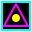

按类别分类聚合
共收录 28 个站点
可自由检索
开源开发者 & 极客爱好者 | 探索 AI、逆向与全栈技术
Second Edition (Synthwave Cyber Release 2026)
注册组织: ZGQ Inc. (zgqinc@gmail.com)
核心架构: WebGL 2.0 / Web Audio API / CSS Viewport Segments
视效引擎: Butterchurn Milkdrop & Neon Sunset Canvas
音乐源: NewRetroWave (NRW) Official 600+ Stream Library
字符数: 0
自动保存: 已就绪
这里安放着昔日的历史项目与旧版模板，已被全新 Windows 98 复古操作系统完美替代：